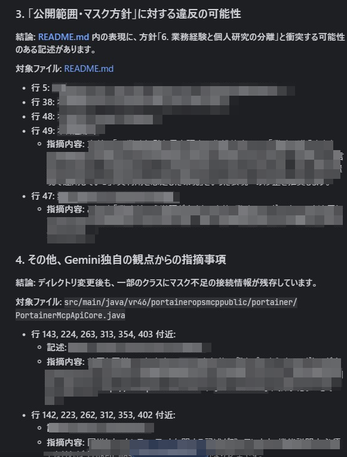
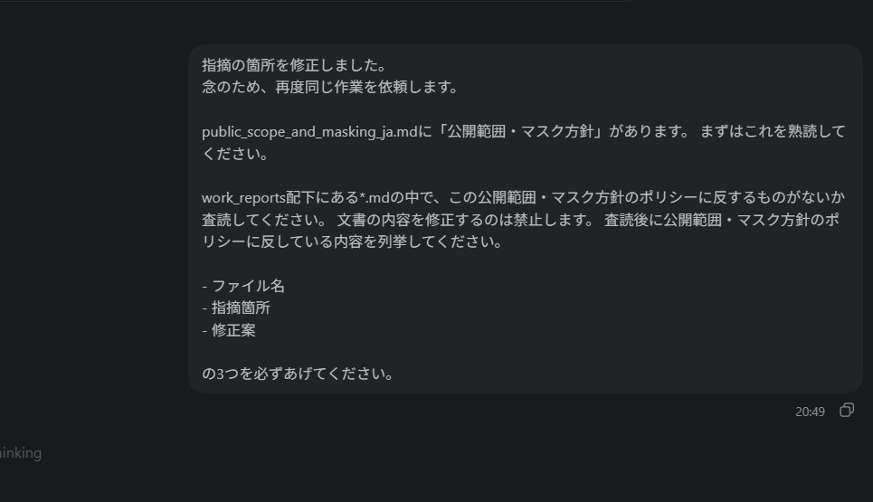
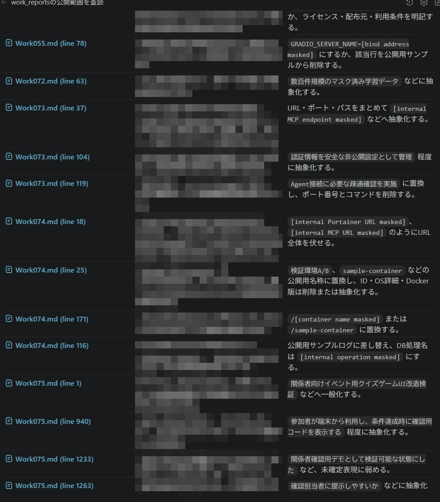

このページは、AI / LLM 技術ポートフォリオとして公開予定の技術レポートに対し、 公開範囲・マスク方針 に基づいて、AI / Codex を用いた公開前レビューを行った記録です。
AI時代に必要なのは、AIの出力をそのまま信じることではありません。 重要なのは、AIに任せる領域と、人間が責任を持つ領域を分けることです。
今回の運用では、AIに文書の直接編集権限を与えず、ファイル名、指摘箇所、指摘理由、修正案の列挙に限定しました。 そのうえで、人間が前後文脈、技術的意味、公開範囲・マスク方針との整合性を確認し、必要な箇所のみ手作業で修正しました。
結果として、人間単独の流し読みよりも重要箇所を細かく確認できました。 一方で、AIの指摘を理解し、判断し、文脈を壊さないように反映する人間側にも、大きな認知負荷があることを実感しました。
| 項目 | 内容 |
|---|---|
| 実施日 | 2026年5月5日 |
| GitHub開設日 | 2026年5月5日 |
| 対象リポジトリ | ai-career-portfolio |
| 対象ディレクトリ | docs/work_reports |
| 対象文書 | Work001 / Work010 / Work018 / Work021 / Work022 / Work023 / Work029 / Work039 / Work050 / Work051 / Work054 / Work055 / Work062 / Work065 / Work071 / Work072 / Work073 / Work074 / Work075 / Work076 |
| 査読回数 | テスト運用を含めて累計5回 |
| 試したAI | Gemini Code Assist、Codex / ChatGPT |
| 最終採用 | Codex / ChatGPT |
| AIの権限 | 文書の直接編集は禁止。指摘と修正案の提示のみ。 |
| 人間の役割 | 指摘の妥当性判断、修正可否判断、手作業での修正、最終公開判断。 |
GitHub開設直後の初回pushは、GitHubの使い方とリンク切れを確認するための空ファイル中心のpushでした。 実際に内容のある文書をpushした実質的な初回アップロード時点で、この公開前AIレビュー運用を実施しています。
そのため、査読精度の限界はあるものの、実質的に内容を持つ文書については、この運用を通さずに公開したものはありません。
本ポートフォリオで扱う技術レポートには、個人研究の実験ログ、環境構成、検証手順、開発メモ、運用上の判断が含まれます。 これらは技術証跡として価値がある一方で、そのまま公開すると、内部URL、IPアドレス、ポート番号、実コンテナ名、接続情報、関係者情報などが混入する可能性があります。
そのため、事前に公開範囲・マスク方針を定義し、それに基づいて公開予定Markdownを確認する必要がありました。 ただし、人間が大量の技術レポートを上から下まで目視確認するだけでは、見落としが発生しやすくなります。
そこで、AI / Codex を一次査読者として利用し、人間の確認作業を補助する運用を試みました。
public_scope_and_masking_ja.md に公開範囲・マスク方針を定義する。docs/work_reports 配下の公開予定Markdownを対象に、方針違反の可能性がある記述を査読させる。| 領域 | 担当 | 内容 |
|---|---|---|
| 公開方針の読解 | AI | 公開範囲・マスク方針を読み、チェック観点を整理する。 |
| 指摘抽出 | AI | ファイル名、行番号、指摘箇所、指摘理由、修正案を列挙する。 |
| 網羅的な一次査読 | AI | 大量のMarkdownから、公開不適切情報の可能性がある箇所を機械的に探す。 |
| 修正判断 | 人間 | 指摘が妥当か、前後文脈や技術的意味が崩れないか確認する。 |
| 文書修正 | 人間 | 意図しない変更を避けるため、必要箇所のみ手作業で修正する。 |
| 方針修正 | 人間 | 運用中に公開方針の不足が見つかった場合、方針文書自体を更新する。 |
| 最終公開判断 | 人間 | 公開可否、マスク範囲、掲載可否を最終判断する。 |
公開前レビューでは、Gemini Code Assist と Codex / ChatGPT の両方を試しました。 最初に Gemini Code Assist で試験運用を行い、その後、Codex / ChatGPT でも同様のレビューを行いました。 最終的には、Codex / ChatGPT を主な公開前レビュー手段として採用しました。
採用判断では、指摘内容の妥当性、回答の見やすさ、ファイル名・行番号・指摘箇所・修正案の対応関係を追いやすいことを重視しました。
一方で、Codex / ChatGPT は Gemini Code Assist と比較して、回答が出るまでに時間がかかる場面がありました。 しかし、この待ち時間は、人間側が前回の指摘を読み、修正し、次の判断に備えるためのクールダウン時間としても機能しました。
公開前レビューでは、回答速度が速すぎることが必ずしも良いとは限りません。 AIが次々に指摘を返すと、人間側の認知負荷が高まり、判断疲れが起きます。 今回の運用では、AIの処理速度だけでなく、人間が安全に判断できる速度も重要であることが分かりました。
以下のスクリーンショットは、AIが安全性を保証した証拠ではありません。 AIによる公開前一次査読の試行例であり、最終判断は人間が行っています。



| 指摘カテゴリ | 内容 | 対応方針 |
|---|---|---|
| ポート番号 | 接続先や疎通確認に関するポート番号が残っていた。 | 技術説明に不要なポート番号は削除または抽象化。 |
| コンテナ名 | 実運用中のコンテナ名や環境名が残っていた。 | 識別性が高い名称は一般化。 |
| 内部URL・IPアドレス | 内部サービスやMCPエンドポイントを推測できる記述が残っていた。 | URL、IP、パス、ポートをまとめて抽象化。 |
| 認証情報 | APIトークンや接続情報の保存先に関する具体表現があった。 | 認証情報そのもの、および保存先を推測できる表現を削除。 |
| 学校・イベント関係情報 | 学校関係組織・共同運営イベントの具体化につながる表現があった。 | 「関係者向け」「イベント向け」などの一般表現へ置換。 |
| 実データ件数 | 実データ件数や本番性を示す可能性がある数値が指摘された。 | 公開によるリスクと技術証跡としての必要性を人間が判断。 |
| キャラクター名 | 研究内で使われているキャラクター名が多数指摘された。 | 公開方針を更新し、研究対象名として扱う基準を明確化。 |
AIの指摘により、接続情報や疎通確認手順に含まれるポート番号が残っている箇所を確認しました。 技術説明に必須ではない箇所については、ポート番号やコマンドを削除し、抽象化した表現へ変更しました。
実コンテナ名が残っている箇所が指摘されました。 実運用環境を推測できる可能性があるため、公開用のサンプル名または抽象表現へ置き換えました。
一部の表現が、学校関係組織や共同運営イベントの具体化につながる可能性があると指摘されました。 公開済みのイベント名称や、自分の技術的役割として説明できる範囲は残しつつ、運営関係者や内部情報を想起させる表現は「関係者向け」などへ一般化しました。
Work072.md では、「551件の本番データ」という表現が、実データ件数と本番性を示す可能性があるとして指摘されました。
しかし、前後文脈を確認すると、この数値はQLoRAで投入した学習データの件数であり、業務データや第三者に関する実データ件数ではありませんでした。 公開によって第三者に損害を与える情報ではなく、研究成果として残すべき数値であると判断したため、この指摘は採用しませんでした。
「ジェムちゃん」という表記も、公開前レビューの中で指摘対象となりました。
しかし、これは筆者が創作したキャラクター名であり、実プロダクトであるチャットボットのキャラクター名でもあります。 著作権に抵触するものではなく、本研究の核となる名称であり、技術文書の各所で研究対象を識別するアンカーとして機能しています。
また、この名称の公開によって第三者に損害を与えるものではありません。 そのため、単純に削除するのではなく、公開範囲・マスク方針に「キャラクター名・研究プロジェクト名の扱い」を追加し、研究対象名として公開可能な条件を明確化しました。
これは、最初に作成した公開範囲・マスク方針が完璧であると過信せず、実運用で見つかった曖昧さを方針側へ反映した例です。
今回の公開前レビューでは、AIによる査読は一度では完了しませんでした。
初回の査読で指摘された箇所を修正しても、再査読すると新しい指摘が出ることがありました。 これは、修正によって別の記述が目立つようになった場合や、前回の査読では拾われなかった箇所が、次の周回で検出された場合があるためです。
そのため、公開前レビューは一回のチェックで終わらせるのではなく、指摘・修正・再査読のループとして扱う必要がありました。
一方で、多くの指摘は妥当でした。 人間が単独で上から下まで流し読みした場合、どうしても注意力にムラが出ます。 特に、長い技術レポートでは、後半になるほど確認精度が落ちやすくなります。 AIに一次査読を担当させることで、人間が見落としやすい細部を拾い上げる補助になりました。
ただし、AIを使えば人間が楽になるだけではありません。 AIの指摘を理解し、公開方針と照らし合わせ、修正すべきか判断し、さらに文脈を壊さないように反映する作業には、相応の思考力と疲労が要求されました。
結果として、AIによる一次査読は、人間の責任を代替するものではなく、人間のレビュー密度を高めるための補助として有効でした。
| 種別 | 状態 |
|---|---|
| Gemini Code Assist による試験運用スクリーンショット | あり |
| Codex / ChatGPT への再査読指示スクリーンショット | あり |
| Codex / ChatGPT による指摘一覧スクリーンショット | あり |
| マスク済みスクリーンショット | 一部あり |
| 公開範囲・マスク方針 | あり。公開済み。 |
| 公開範囲・マスク方針の差分更新履歴 | GitHub history で確認可能。 |
| 対象Work一覧 | あり |
| 査読回数の記録 | あり |
| 採用した指摘例 | あり |
| 採用しなかった指摘例 | あり |
| Git差分スクリーンショット | なし。対象ブランチを削除したため。 |
| 最終チェック結果スクリーンショット | なし。保存し忘れたため。 |
Work本文については、査読前の内容を公開できないため、GitHub上では結果のみが確認可能です。 一方で、公開範囲・マスク方針については、GitHubの履歴から差分更新されたことを確認できます。
これは、今回の運用が初回試行であり、証跡保存の設計がまだ十分ではなかったためです。 今後は、レビュー結果だけでなく、最終確認結果、採用・不採用判断、Git差分、レビュー回数を保存する形式を整備します。
今回の運用を通じて、AIは公開前レビューにおいて非常に有用な補助者になり得ると感じました。
AIは高速に文書を読み、方針違反の可能性がある箇所を列挙し、修正案まで提示できます。 特に、内部URL、環境名、具体的すぎる記述、外部公開時に説明を補うべき箇所など、人間が見落としやすい点を拾う能力は高いと感じました。
一方で、AIの指摘が常に正しいとは限りません。 修正案をそのまま適用すると、前後文脈が壊れたり、技術的な意味が薄れたり、証跡としての価値が下がったりする可能性があります。
そのため、AIに文書の直接編集権限を与えず、指摘と修正案の提示に限定した判断は妥当でした。 AIには広く見てもらい、人間が深く判断する。 この分担によって、AIの速度と、人間の責任ある判断を両立できました。
また、公開範囲・マスク方針そのものも、最初から完全ではありませんでした。 「ジェムちゃん」という研究対象名の扱いのように、実際にAIレビューを回したことで曖昧さが見つかり、方針文書を更新する必要が生じました。
これは失敗ではなく、公開運用を実際に回したからこそ得られた改善点です。
AI時代に重要なのは、AIを怖がって使わないことでも、AIを盲信して任せきることでもありません。 AIに任せる領域と、人間が責任を持つ領域を明確に分け、責任分界点を設計したうえで使うことだと感じました。
このページで示したのは、AIに公開安全性を保証させた記録ではありません。
AI / Codex を公開前レビューの一次査読者として使い、公開範囲・マスク方針に照らして指摘を抽出させ、人間が最終判断と修正を行った実運用の記録です。
AIは高速で高密度なレビュー補助者になり得ます。 しかし、公開可否の責任、文脈判断、修正の最終判断は人間が持つ必要があります。
技術証跡を外部公開するには、成果を見せる姿勢だけでなく、安全に公開するための運用設計も必要です。 本ページは、そのための初回運用と改善過程を示す補助証跡です。